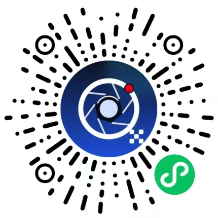

手机
手机上也能选型、查型号
同一套型号数据与算法，扫码即用；微信里打开也不用装任何东西。
 微信公众号
扫码关注，获取版本更新
微信公众号
扫码关注，获取版本更新

微信小程序 手机上选型、查型号在线工具
不用先弄懂焦距、景深和卡口。给出需求，系统把选择收窄到几款；想自己挑，也有逐个参数的对照评定。
型号库
只把参数齐全的在售型号放进选型池，退市型号单独标注；给出算不出来的方案，不如不给。
上手
选型助手顶栏点「铜线检测 / 精密测量」等预设，先看方案长什么样，再换成自己的参数。
视野、精度、任务按实际填；方案卡可展开全部参数，型号能点开看备选与替换。
拿不准的型号搜出来横向对比，或按条件筛同类，确认价格与货期后再询价。
资料
手机
同一套型号数据与算法，扫码即用；微信里打开也不用装任何东西。
微信公众号
扫码关注，获取版本更新

微信小程序 手机上选型、查型号